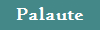
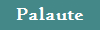

JavaGalaksi on yksityinen julkaisukanava pienille ohjelmille, jotka yleensä on ohjelmoitu Javalla. Tulevaisuudessa sivuille luultavasti lisätään toisten koodareiden mm. ActionScriptillä, C++ tai Pythonilla valmistamia ohjelmia. Sivusto on harrastepohjainen ja ylläpitäjä on täysi amatööri. Odotettavissa ei siis ole minkäänlaisia huippuohjelmia, vaan enemmänkin ylläpitäjän & muiden tekemiä pikkuohjelmia. Näihin pikkuohjelmiin kuuluu pääasiassa paljon erilaisia laskimia, tekstipohjaisia ohjelmia, grafiikkatestailua, ja myöhemmässä vaiheessa myös pieniä pelejä. Sivusto sisältää ohjelmoinnin lisäksi myös erilaista kulttuurimateriaalia mm. Japanista, esimerkiksi asiaa bonsaista. "Muuta"-osiossa on nimensä mukaisesti myös muuta sälää. Sivusto on tehty XHTML:llä, käyttäen myös CSS:ää, ja jos sinulla on jokin parannusehdotus voit lähettää sen Palaute-osiosta ylläpitäjälle. Sivuston ylläpitäjä on Aapo Kiiso |
© Aapo Kiiso 2011